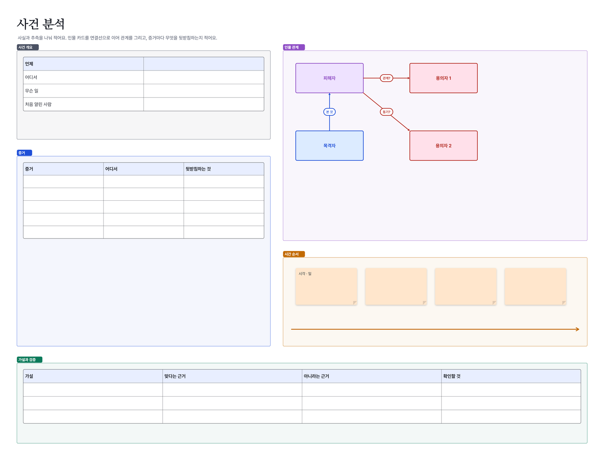

이런 분께: 추리 소설·TRPG 모임, 드라마·사건을 분석하는 사람, 조사·감사 업무
Walkie로 할 수 있는 것
- 인물·증거·장소 구역과 타임라인이 나뉜 템플릿
- 카드에 붙인 선은 카드를 옮겨도 따라오고, 선 위에 "협박", "목격" 같은 설명
- 사진·PDF·엑셀 표를 붙여 넣으면 그대로 보드 위 카드로
- 레이저 포인터·함께 보는 커서로 "여기 보세요"를 바로
- 보드는 서버에 저장되지 않아 민감한 자료도 멤버 기기에만 남아요


템플릿으로 바로 시작
- Walkie를 설치해요(Windows 10·11, 안드로이드). 혼자 쓰는 "이 기기 보드"는 로그인 없이 바로 열려요.
- 아래 템플릿 파일(.walkie)을 받아 두 번 누르면 Walkie에서 새 보드 한 장으로 열려요. 앱 안 도구 묶음의 "템플릿"에도 같은 템플릿이 있어요.
- 함께 쓰려면 그룹을 만들고 초대 링크를 보내요. 통화를 켜고 같은 보드를 동시에 고쳐요.
자주 묻는 질문
사진이나 PDF 증거도 올릴 수 있나요?
네. 사진·PDF·워드·엑셀 파일을 끌어다 놓거나 붙여 넣으면 보드 위 카드가 돼요. PDF는 쪽을 넘겨 볼 수 있어요.
여러 명이 동시에 고칠 수 있나요?
네. 그룹 멤버가 같은 보드를 동시에 고치고, 통화와 채팅도 같은 화면에서 해요.